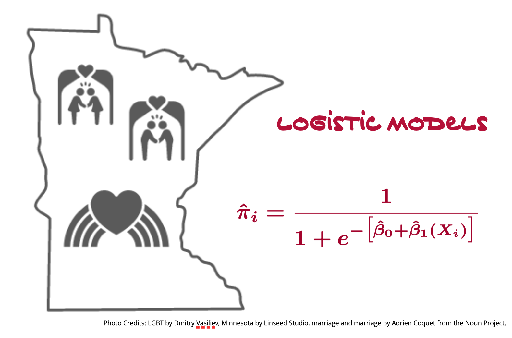

Assignment 05
LOGISTIC REGRESSION
This goal of this assignment is to give you experience working with working with logistic regression models to analyze dichotomous outcome data. This assignment is worth 15 points.
According to the data, a majority of Americans now support same sex marriage (Pew Research, 2022). There are several known factors that play a role in whether people support same sex marriage, including education level, age, religious beliefs, and political ideology. One hypothesis is that if people have a frienda who identifies as gay/lesbian, they are more likely to support same sex marriage.
In this assignment, you will use the data from the file same-sex-marriage.csv to examine this hypothesis. All model selection should be performed using information criteria. We will also take an exploratory approach to the data which means that as we are initially evaluating predictors and their functional forms, we will adopt functional forms based on the smallest information criteria and only consider model uncertainty (e.g., models with a \(\Delta\)AICc < 4) at the end of the analysis.
Instructions
Submit either your QMD and HTML file of your responses to the following questions. (If you are not using Quarto, submit a PDF file.) Please adhere to the following guidelines for further formatting your assignment:
- All graphics should be resized so that they do not take up more room than necessary and should have an appropriate caption.
- Any typed mathematics (equations, matrices, vectors, etc.) should be appropriately typeset within the document using Markdown’s equation typesetting.
- All syntax should be hidden (i.e., not displayed) unless specifically asked for.
- Any messages or warnings produced (e.g., from loading packages) should also be hidden.
Focal Predictor
You will begin the analysis by examining the effect of the focal predictor, the number of gay/lesbian friends, on support of same-sex marriage. While the data for this predictor come from a Likert scale, which is ordinal in nature, it is common to treat ordinal variables as a continuous in the model. The only caution being when we interpret effects—when interpreting a slope, we generally say something like, “a one-unit difference in \(X\) is associated with a \(\hat\beta_1\)-unit difference in \(Y\)”. However, for ordinal (Likert) data a one-unit difference in \(X\) really indicates a shift from one category to the next highest category.
Begin by computing the empirical proportion of people that support same-sex marriage for each of the levels of the
friendsattribute. Create a line plot that shows the relationship between proportion of support and number of gay/lesbian people known. (This plot will help us consider the appropriate functional form for the predictor.)Fit two logistic models to the data using the number of gay/lesbian friends as the predictor to predict variation in support for same-sex marriage. In the first model, only include the linear effect of number of gay/lesbian friends. In the second model, include both a linear and quadratic effect of the number of gay/lesbian friends. Which model should be adopted (linear or quadratic)? Justify your response by providing any statistical evidence you used in reaching your decision.
Write the fitted equation for the model you adopted (Don’t forget to include all appropriate subscripts. Also define any terms in the model that are ambiguous.)
Use the fitted equation for the adopted model to predict the (a) log-odds, (b) odds, and (c) probability of someone supporting same-sex marriage if that person has a lot of gay/lesbian friends.
Covariate Model
Create a set of plots for each of the other continuous covariates (education level, age, frequency of attendance at religious services, political ideology) that will help you adopt an appropriate functional form for each. Also compute any statistical evidence that allow you to make this decision. Once you have settled on the appropriate functional forms for these predictors, build a covariate model (do not include the focal predictor in this model) to predict variation in support for same-sex marriage. Be sure to also include the categorical covariates (female and political party) in this model. When including political party, set “Republicans” as the reference group.
Write the fitted equation for the covariate model. (Don’t forget to include all appropriate subscripts. Also define any terms in the model that are ambiguous.)
Interpret the effect associated with the
Democratcoefficient in terms of (a) log-odds, and (b) odds.Compute and report one of the pseudo-\(R^2\) values for the covariate model. Also provide an interpretation of this measure.
Full Main-Effects Model
Fit the logistic model that includes all the covariates included in the covariate model and the any effects of the focal predictor (adopted earlier) to predict variation in support of same-sex marriage.
- Evaluate whether the number of gay/lesbian friends a person has is statistically important after controlling for the set of covariates. Also indicate whether there is still a quadratic effect of the focal predictor after controlling for the set of covariates. Include any statistical evidence you use to come to these determinations. (2pts.)
Presenting Results
Create a table of results from all the fitted models. This table should include both focal predictor models, the covariate model, and the full main-effects model, as well as any model(s) you adopted from the previous question. Like other regression tables you have created, be sure to include the estimated coefficients and standard errors for each of the effects included in the models. (To be consistent with ASA recommendations, do not include p-values or stars.) Also include the AICc values for each model. (2pts.)
Based on the AICc values from the models included in your table, comment on the degree of model selection uncertainty. Should we adopt one or more than one model? Explain.
Create a plot that visually displays the results of your final adopted fitted model. Be sure to visually show the effects the focal predictor. Also show any pertinent covariates you think are necessary to include. (Think about how the inclusion of the covariates help readers better understand the effects of the focal predictors.) (2pts.)
Write a few sentences that provide evidence about the hypothesis presented in the beginning of the assignment. Use the models in your table of model results to help create this narrative.